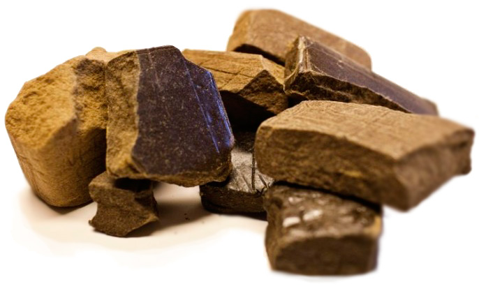
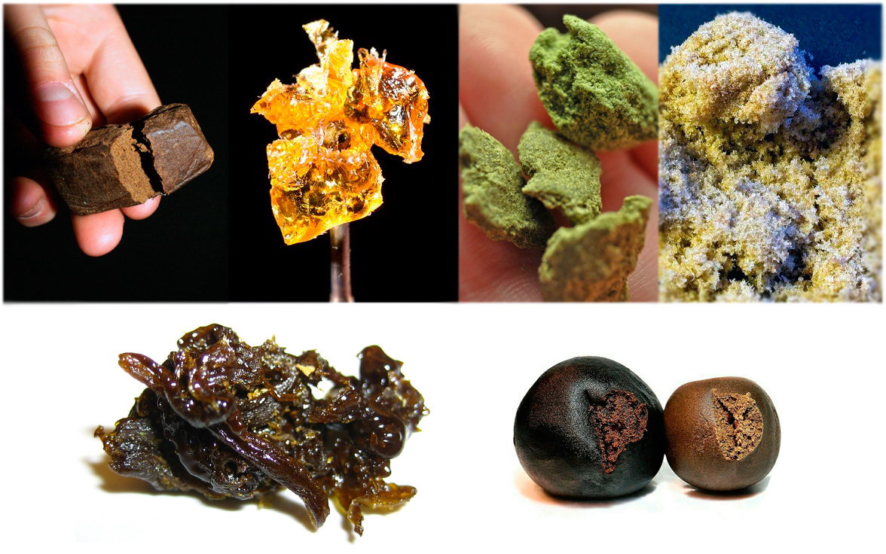
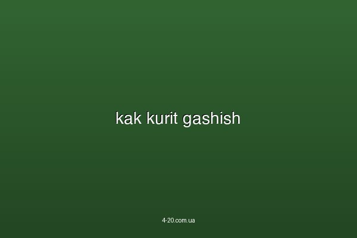
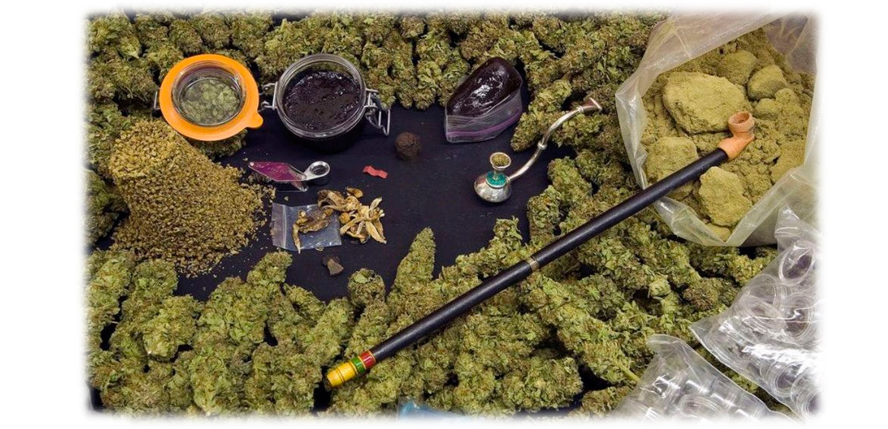

О том что такое гашиш, как курить гашиш, какой эффект и влияние он несет для человеческого организма. Пластилин, гаш, гэш, ганджа, чаррас и множество других названий есть у этого наркотического вещества, но самое распространенное - гашиш.
Что такое гашиш

Гашиш это плотная смесь из трихом, смолы, кусочков листьев и соцветий созревшей конопли. Настоящий гашишь является наиболее мощным веществом чем даже сортовая марихуана, так как сам гашиш состоит из вещества концентрирующего наиболее количество ТГК. Основным составляющим и психоактивным веществом является дельта-9 тетраканабинол ТГК. Именно этот компонент содержится в липких слоях растения конопли и именно это вещество является основной составляющей гашиша. В гашише его содержание достигает 10%, а порой и 20% от общей массы вещества. Самое большое содержание ТГК в гашишном масле, а это более 50%. Другими компонентами содержания гашиша являются каннабидиолы КБД и каннабинолы КБН. При правильной технике изготовления из 1 кг качественной конопли получается не менее 50 грамм гашиша.Наиболее распространенная форма гаша как плотный брусок, с довольно липкой поверхностью, от светло-коричневого до темно-бурого и черного цвета. Конкретно сам цвет гашиша зависит от метода изготовления этого продукта, а так же от сорта марихуаны из которого он делался. Понять что такое гашиш и чем он отличается от марихуаны, получиться попробовав это вещество. По эффекту гаш и мариванна значительно отличаются, и по мощности гашиш в несколько раз может быть сильнее чем обычная конопля.
О том как сделать гашиш подробно в данном видео. Наиболее популярный и качественный метод изготовления гашиша в Европе.
Существует несколько способов того как делают гашиш - он может быть как прессованная пыльца марихуаны (камень), смола мацанка-пластилин, химически экстрагированна липкая субстанция -химка. Самым простым и распространенным гашишом является камень, более качественным является пластилин, самым мощным и чистым является гашиш масло, а менее ценаая химка.
Как делают гашиш и какой он бывает
- Пыль (на сленге "прибивон") - это пыльца которая остается после просеивания высушенной сортовой конопли. Этот компонент является частью будущего гашиша который изготавливается методом сушки, просеивания и прессования.
- Камень - спрессованная, твердая пыльца марихуаны, которая прошла обработку паром или нагреванием в результате чего получается плотных камушек. В зависимости от используемого изначального сырья конопли, камень может быть в сыпучем состоянии или твердом.
- Пластилин (мягкий гашиш) - индусы называют его "чарас". Это концентрированная смесь из пыльцы и смолы созревших шишек конопли. Метод добычи пластилина это мацание зеленых растений марихуаны. По своему виду пластилин бывает коричневых оттенков, довольно мягкий и пластичный.
- Химка - это смесь замоченного конопляного сырья в растворителе (в лучшем случае шишек, но чаще всего листьев/лопухов). В дальнейшем жидкость испаряется и полученная темная зеленая масса хлорофилла спрессовывается. Такой вид гашиша является наименее концентрированным, домашним способом.
- Гашишное масло (масло конопли, медок) - самый чистый и концентрированный вид химки. Масло имеет жидковатую, густую консистенцию похожую на гель янтарного, зеленого или желтого цвета. Получают масло путем экстракции ТГК сжиженным бутаном и другими растворителями.


Как курить гашиш
Гашиш употребляют смешивая его с марихуаной или табаком, а так же добавляя в пищу. Курят гашиш из косяка, богда, дудки и других проспособлений. Гашишное масло наносят на сигарету или в специально предназначенную для масло курительную колбу. В отличии от курения конопли, когда само растение поджигается, гашиш рекомендуется употреблять выпаривая из него дым, который нужно вдыхать.
Влияние гашиша на организм человека
Как и травка, регулярное и частое употребление гашиша имеет негативные последствия. Человек курящий марихуану или гашиш не является угрозой для общества, но неконтролируемое употребление несет негативное влияние на здоровье курильщика. Наиболее частые случаи это ухудшение памяти. Такая ситуация наблюдается в результате очень частого употребления конопли. Но если курить не более пары раз в неделю, такой вид курения не вызывает зависимость и не несет последствий на здоровье или психику человека. Как и марихуана, гашиш в крови остается довольно долго так как концентрируется в жировых тканях человека. Наибольшая концентрация наблюдается в первые несколько часов после приема, тем не менее небольшую концентрацию содержания канабиноидов в организме можно наблюдать спустя даже несколько недель.
Важно напомнить что гашиш является производной из конопли, которая с свою очередь запрещена для продажи, употребления и распространения на территории Украины, России, Беларуссии и ряда других стран. Поэтому чтобы попробовать и сделать гашиш езжайте в края прошедшие легализацию!
